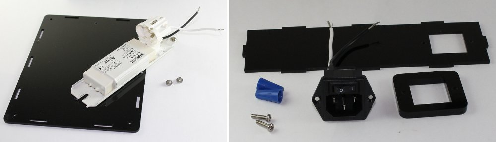
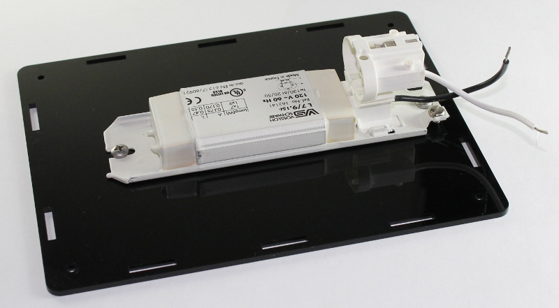
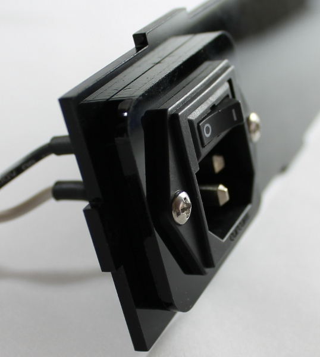
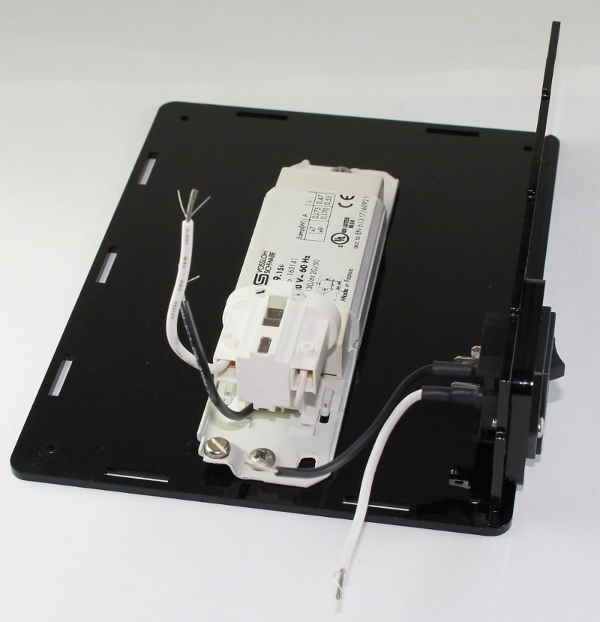
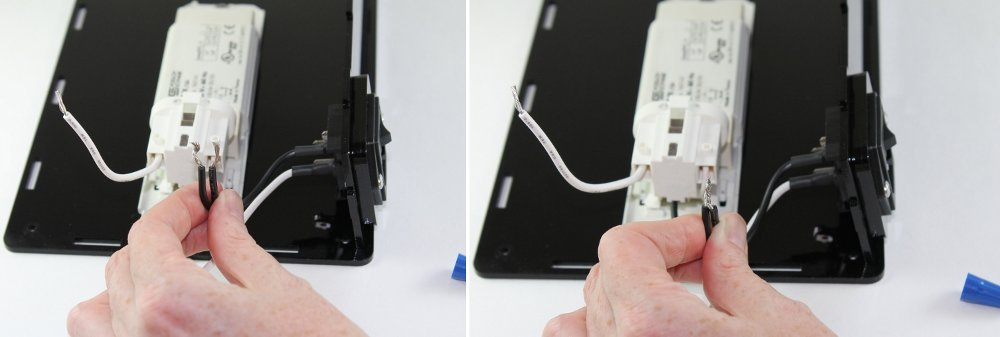
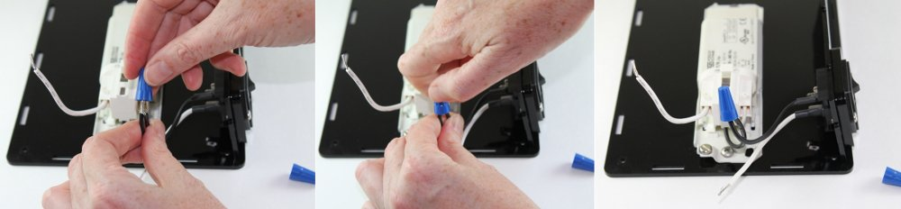
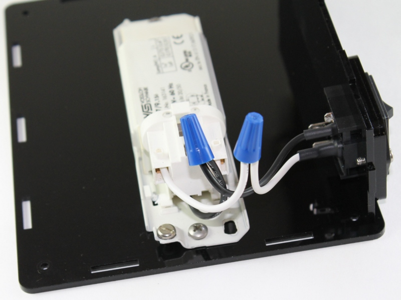

Assembly Step 1: Connect Power¶
Parts List¶
- Enclosure base
- Ballast
- Hardware Bag A
- Enclosure side with cutout
- Power connector
- Power connector adapter

Instructions¶
The ballast and power entry with switch in the kit are partially assembled - wires have already been soldered to the power connector and the lamp ballast as described in a previous Instructables step. In Step 1 you will mount these parts to the enclosure and use twist-on wire nut connectors to connect the power entry to the ballast.
- Place the ballast onto the base plate and secure in place with the ballast screws. Tighten down with the screwdriver. Note the correct orientation of the ballast on the base plate below.

- Thread the power connector through the power connector adapter and then through the enclosure side with the cutout. Secure in place with the power connector screws. Tighten down with the screwdriver.

- Place the assembled part from the previous step onto the base plate in the orientation shown in the picture below.

The twist-on wire nut connectors will be used to connect the two neutral (white) and live (black) wires.
- Take the ends of the two black wires and line up the frayed ends. Twist the wires together.

- Insert the wire bundle into the connector and twist the connector clockwise until tight. It should fit tightly on the wires. Test by pulling on the connector to ensure if does not come off the wires.

- Repeat steps for the two white wires.
